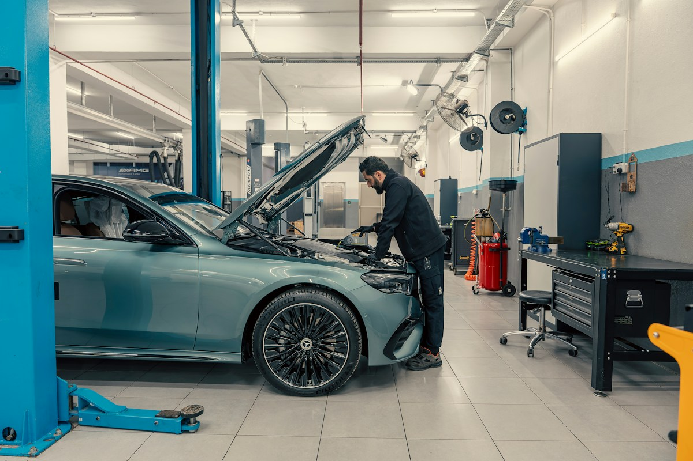
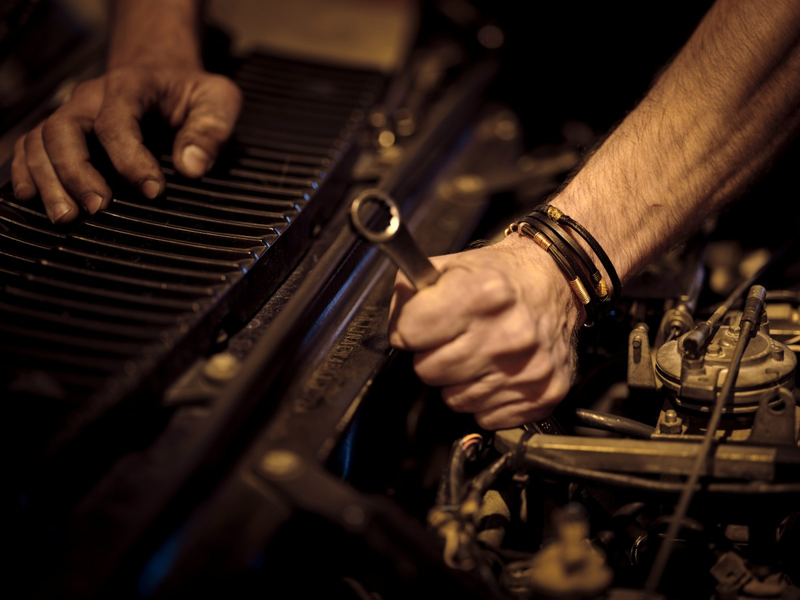
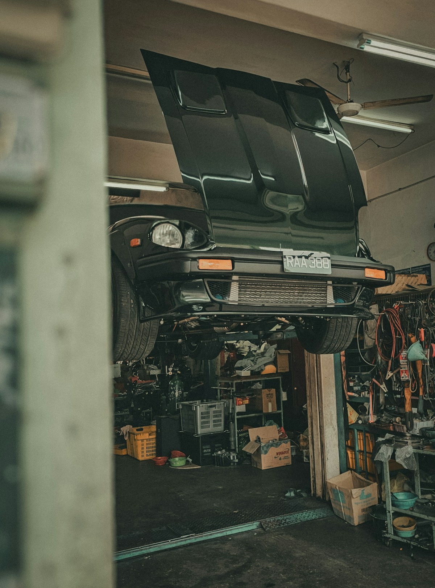

Честная смета до начала работ, гарантия 6 месяцев и машина к назначенному времени. Диагностика — бесплатно при ремонте у нас.
Записаться в WhatsApp Услуги и ценыТочная смета — после диагностики. Цена не меняется в процессе ремонта.
Считываем ошибки, находим причину, а не symptom.
Масло, фильтры, свечи. Запчасти в наличии и под заказ.
Стойки, рычаги, ступицы. Выезд на тест-драйв после ремонта.
От мелкого ремонта до капитального. Гарантия на работы.
Проводка, датчики, свет, стартеры и генераторы.
Диски, колодки, суппорты. Прокачка и проверка на стенде.
Легковые и кроссоверы. Балансировка, сезонная переобувка.
Заправка, поиск утечки, ремонт компрессоров.

Отзывы из Яндекс.Карт и 2ГИС.
Ответим в WhatsApp в течение 15 минут в рабочее время.
